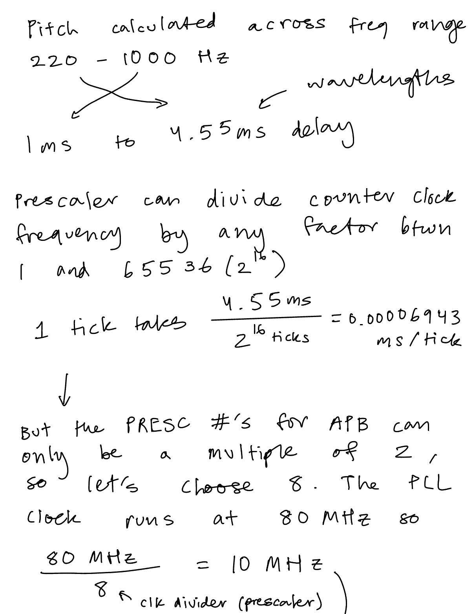
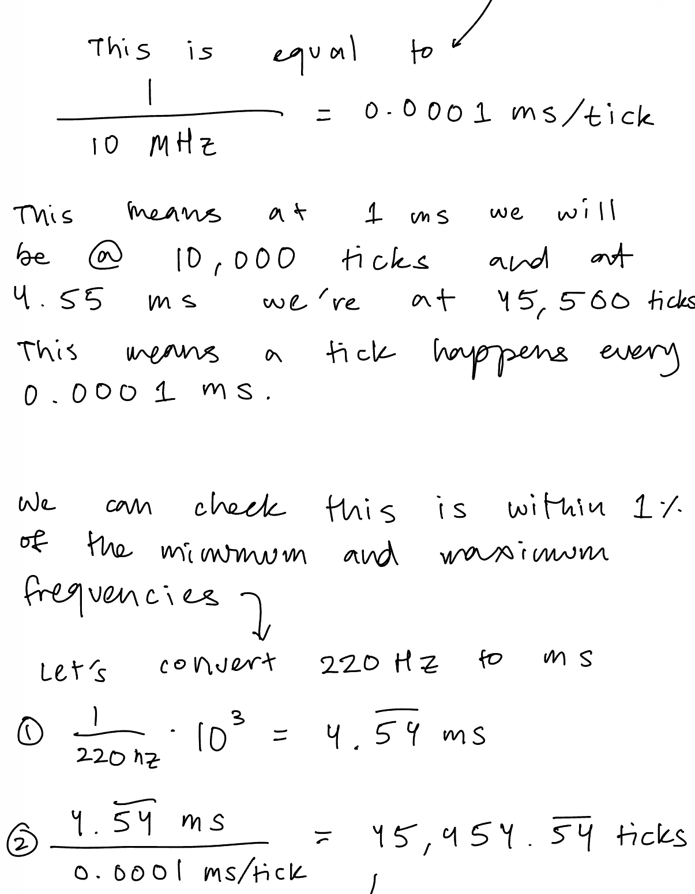
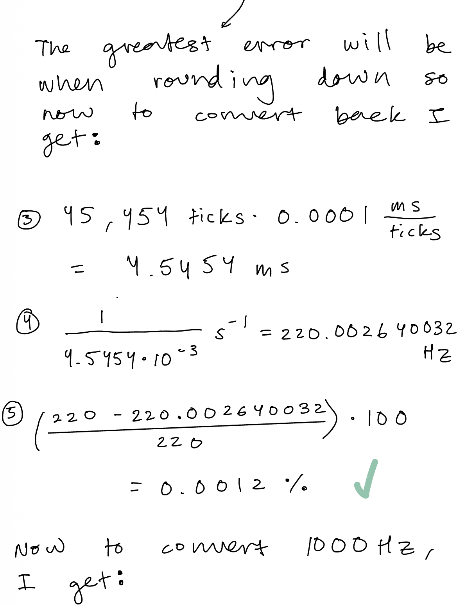
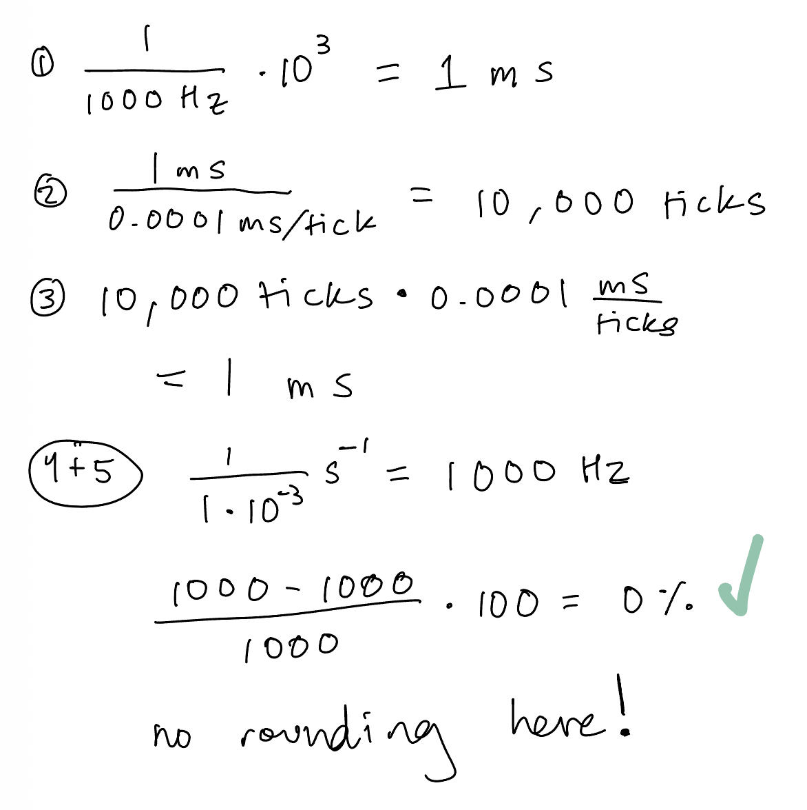
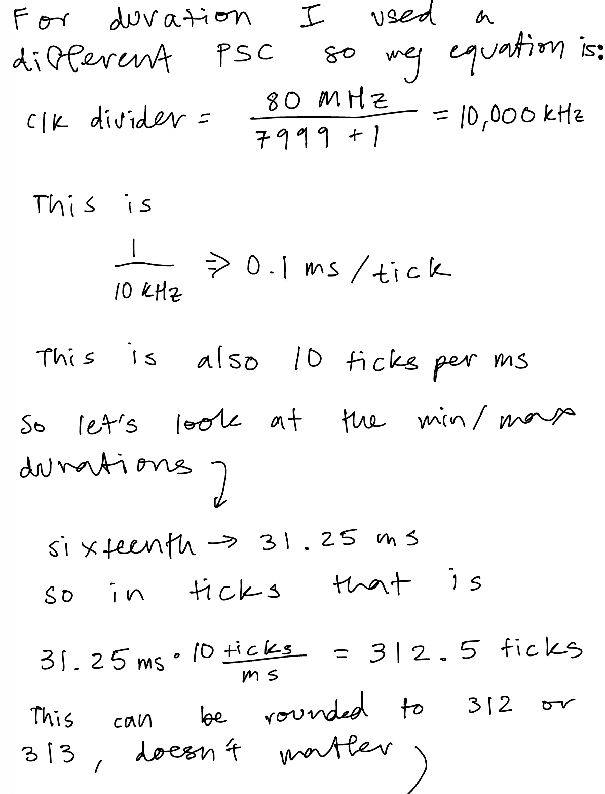
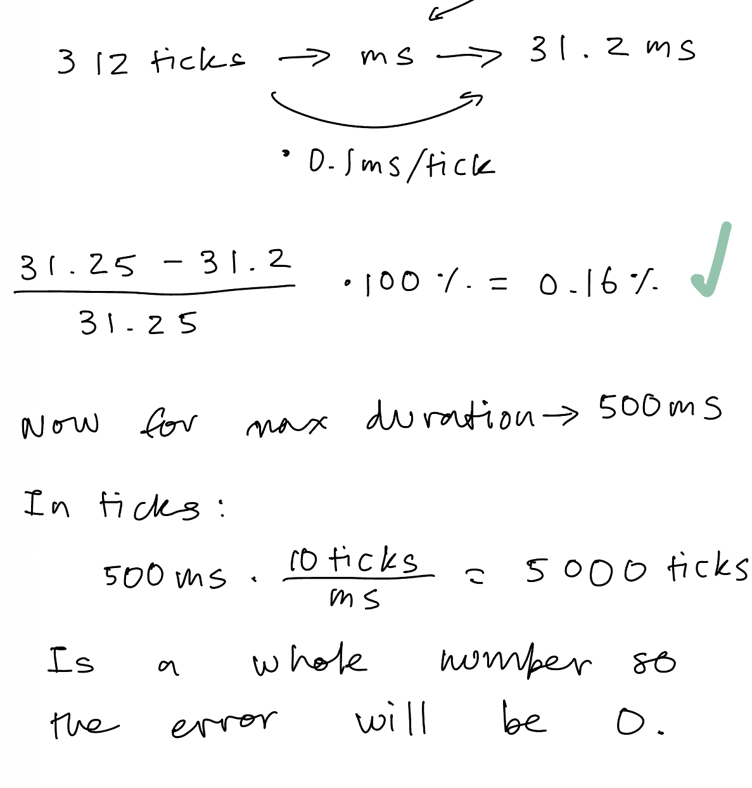
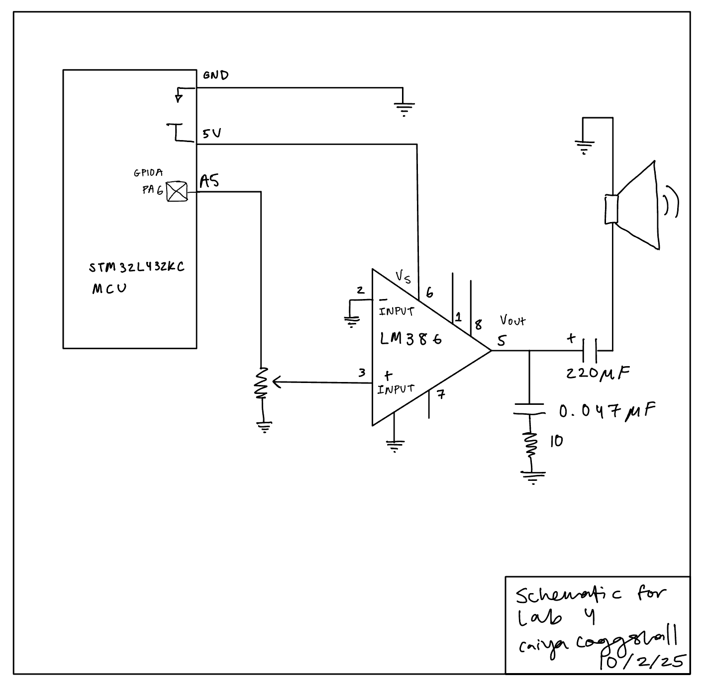

Lab 4 : Digital Audio
Introduction
In this lab, I used an MCU to play music by using timers to generate square waves (toggling a GPIO pin at a specific frequency for specified durations). I was able to sucessfully play “Fur Elise” by Ludwig van Beethoven, “I Will Survive” by Gloria Gaynor, and “Beauty And A Beat” by Justin Bieber and Nicki Minaj.
Project Details
Design and Testing Methodology
Choosing a Prescaler Value
Prescaler has to be set to 1, 2, 4, 8, 16 as the division factor.
Pitch needs to calculated across the frequency range 220 - 1000 Hz. If you do 1/f you get seconds which finds wavelengths at a range between 1 ms to 4.55 ms.
The prescaler divides your counter clock frequency by any factor between 1 tick and 65536 (2^16) ticks because we have a 16 bit PSC register that we can set.
We calculate how long a tick takes by dividing the ms/tick to get ms per tick. We don’t want to do 1 ms / 1 tick because then that would mean the frequency corresponding to 4.55 ms would be either 4 ticks or 5 ticks which would cause a big error margin off of 1%. So we set this with the most amount of ticks we can which is 4.55 ms / 2^16 ticks -> 0.00006943 ms/ticks.
In terms of the PSC we can see on the clock tree that there are a couple of PSCs that we can set. There’s a PSC for AHB coming from the SysCLK and APB1 and APB2. I believe because of the reset value the default is just being disabled/or set to 1 which doesn’t change anything for us. This is different PSCs than the ones that we can set internally on the timers at their PSC registers.
That can be set to anything I think but to be safe, I set it to be a multiple of 2, in this case 8.
That means that it would take my 80 MHz clock from the PLL file and divide by 8 to get a 10 Mhz frequency. You can then use that and the equation: f_clkpsc / PSC[15:0] + 1 to solve for the new ms per tick. But I did a slightly different way where I took that 10 MHz signal and did 1/10*10^6 which gets 0.0001 ms per tick as the rate I’m ticking at.
To check that this is within 1% I check with a random frequency, let’s say 622.2 Hz so I convert that into milliseconds to get 1.6072… I then take that number and divide by my 0.0001 ms / tick to get ms/ (ms/ticks) = ticks -> This is 16,072.00257 ticks. The whole point is that the PSC counter can only do whole numbers so to get the 622.2 Hz frequency it would count to either 16,072 ticks or 16,073 ticks. (16,073 ticks has the larger error margin so I continued with that)
Then I convert this back using the steps above in opposite direction to get 622.16 which I do abs((622.2 - 622.16) / 622.2) * 100 to get an error of 0.0006 % which is less than 1 % so we are good.
Calculations for Minimum and Maximum Frequency/Duration






Technical Documentations
All the code for the project can be found in the following Github repository.
Schematic
I followed a circuit as found on Figure 9 of the datasheet for a LM386 Low Voltage Power Amplifier. My own drawn schematic can be found in the figure below:

Results and Discussion
I met all specifications for this lab. There were a number of errors that came up. One of the biggest ones.
Here’s a video of the working Fur Elise Composition:
Conclusion
Total Time: ~ 40 hours
This lab wasn’t the most difficult so far but there was a small learning curve to getting reaquainted with C programming and a lot of small software bugs along the way ended up taking a lot of time to figure out. Overall a very fun lab to encode for!
The bugs were seprated between software and hardware. Hardware was easier to debug for, often it was a variation of buzzing through the speaker that could be solved by putting a capacitor between power and ground. Additionally, since I pluggged directly into the MCU opposed to the motherboard the pin names were not the same and that was something I figured out a little later. Additionally as I was testing, I had routed 5V from the power supply and grounded via my MCU. This is an electrical fundamental that I didn’t even realise! I needed to ground and power from the same supply to create a complete and consistent common point for the electrical signals, where I likely had a floating voltage before.
The software bugs were a little harder to solve for because often I would be writing to the right registers and have all the puzzle pieces but they weren’t put together correctly.
At first nothing even played! I forget the exact fix but it involved a lot of Build and Debug stepping through. After that the notes weren’t being delayed and so the speaker didn’t play but I did get a square wave with the right frequencies on the oscilloscope. I believe this was a but in outputPWM where I calculated my ARR value to be ((1/hz)1000TICKSPERMS). I luckily already had an if statement for when hz = 0 but when I did 1/hz first it would create such a small number that it would round down to 0 and never delay any of the notes.
The bug that I arguably spent the most time on was when my first note of any song would hold for 7 seconds (I counted!) and some of the delays would bleed into each other. It made the melody very fun to listen to but ultimately wrong:
The fix here was om delay_millis(). I would setup my counter (CNT = 0) right before my while loop where it waited for my UIF flag to trigger. But when stepping through, the CNT would be larger than the ARR and sometimes the UIF flag would still be low. Part of this was I didn’t reinitialize the counter by setting the UG bit. But as soon as I would do that, the speaker wouldn’t play anything. So this involved some shuffling of line order. I first reloaded the register, set the status register to count, updated the UIF flag to go high when CNT > ARR, set up counter, and THEN set the UG big and cleared it in software (in status register) IMMEDIATELY and then when into the while loop. Which did a hard reset in software so the CNT was 0 when starting in the while loop.
AI Prototype Summary
I used ChatGPT 5 Pro to answer the following prompt:
" What timers should I use on the STM32L432KC to generate frequencies ranging from 220Hz to 1kHz? What’s the best choice of timer if I want to easily connect it to a GPIO pin? What formulae are relevant, and what registers need to be set to configure them properly? "It produced the following response:
``` Plan of attack (brief): pick a timer that can drive a pin directly, decide how you’ll clock it, then set prescaler (PSC) and auto‑reload (ARR) so the update rate lands in 220 Hz–1 kHz. Use PWM mode for a clean 50 % square wave (or any duty), and route the channel to a convenient GPIO with the right Alternate Function (AF). Finally, enable the channel and (for TIM1 only) its main output.
Which timer on STM32L432KC?
For a simple, accurate square wave on a GPIO, use a timer that has output‑compare/PWM channels and has those channels pinned out in the 32‑pin package:
TIM2 (general‑purpose, 32‑bit) — simplest choice; four channels on easily available pins:
PA0/PA1/PA2/PA3 ⇒ TIM2_CH1/CH2/CH3/CH4 (AF1); PA15 (CH1) and PB3 (CH2) are also options. STMicroelectronics
TIM1 (advanced, 16‑bit) — also fine; four channels on:
PA8/PA9/PA10/PA11 ⇒ TIM1_CH1/CH2/CH3/CH4 (AF1). Note TIM1 needs BDTR.MOE=1 to drive pins. STMicroelectronics
TIM15/16/17 exist but have fewer channels; they work too if those specific pins suit your layout. (See AF tables in the datasheet.) STMicroelectronics
Avoid basic timers (TIM6/TIM7) for this—they have no output pins (useful only for timebases/interrupts). For ultra‑low‑power or Stop‑mode output you can use LPTIM1 (and LPTIM2 is also present), but the default LPTIM1 output is on PA14 (SWCLK), which collides with the debugger—fine in production, awkward while debugging. STMicroelectronics +1
Bottom line: If you want the easiest path to a GPIO today, pick TIM2 (e.g., CH1 on PA0) or TIM1 (CH1 on PA8). Both channels are clearly pinned in the L432KC datasheet’s AF tables. STMicroelectronics
What gets you the right frequency?
Let
𝑓 tim f tim
= timer input clock (derived from APB bus),
𝑃 𝑆 𝐶 PSC = prescaler register value,
𝐴 𝑅 𝑅 ARR = auto‑reload register value (period),
𝐶 𝐶 𝑅 𝑥 CCR x
= compare (duty) for channel 𝑥 x.
Key facts:
Timer counter clock after prescaler
𝑓 cnt = 𝑓 tim 𝑃 𝑆 𝐶 + 1 f cnt
= PSC+1 f tim
PWM (edge‑aligned) / update frequency
𝑓 out = 𝑓 cnt 𝐴 𝑅 𝑅 + 1 = 𝑓 tim ( 𝑃 𝑆 𝐶 + 1 ) ( 𝐴 𝑅 𝑅 + 1 ) f out
= ARR+1 f cnt
= (PSC+1)(ARR+1) f tim
Duty cycle on channel 𝑥 x
= ( CCR_x=\text{ for ≈50 %})
ST’s timer docs (and wiki) use exactly these relations. STMicroelectronics Wiki
Where does 𝑓 tim f tim
come from? From the APB clock with the usual STM32 quirk:
If APB prescaler = 1: 𝑓 tim = 𝑓 APB f tim
=f APB
.
If APB prescaler > 1: timer clock is 2× APB (timers get an extra x2). This is in the ST docs and FAQs; double‑check your RCC setup. STMicroelectronics Wiki +1
On the L432, a very common setup is SystemCoreClock = 80 MHz with APB prescalers = 1 ⇒ 𝑓 tim = 80 MHz f tim
=80 MHz for TIM1/TIM2.
One‑setting trick for your whole 220–1000 Hz range
Fix the prescaler so the counter ticks at 1 MHz (easy math), then vary ARR:
Set PSC = 79 → 𝑓 cnt = 80 MHz / ( 79 + 1 ) = 1 MHz f cnt
=80MHz/(79+1)=1MHz.
Then ARR = round(1,000,000 / f_{}) − 1.
Examples (all ≈50 % duty with CCR = (ARR+1)/2):
Target f (Hz) ARR+1 (rounded) ARR CCR (≈50 %) Resulting f 1000 1000 999 500 exactly 1.000 kHz 880 1136 1135 568 1 000 000/1136 ≈ 880.28 Hz 440 2273 2272 1136 1 000 000/2273 ≈ 440.04 Hz 220 4545 4544 2272 or 2273 1 000 000/4545 ≈ 220.02 Hz
The errors are ≤0.03 %, dominated by integer rounding—well below typical RC oscillator drift unless you clock the timer from a crystal‑disciplined source. (Formulas per ST’s timer docs.) STMicroelectronics Wiki
Registers to touch (TIM2 example on PA0 = TIM2_CH1)
Pin mux (datasheet AF table shows AF1): set PA0 to AF1. STMicroelectronics
Enable clocks
RCC->AHB2ENR |= RCC_AHB2ENR_GPIOAEN; (GPIOA)
RCC->APB1ENR1 |= RCC_APB1ENR1_TIM2EN; (TIM2) (These bit names are standard for the L4 family; see ST headers/reference.) ST Community
GPIO alternate function (AF1 on PA0)
GPIOA->MODER → set PA0 to 10b (Alternate).
GPIOA->AFR[0] → set PA0 AF to 1 (TIM2/AF1 per datasheet). STMicroelectronics
Timer base
TIM2->PSC = 79; // 1 MHz tick at 80 MHz timer clock
TIM2->ARR = 999; // 1 kHz to start
TIM2->CR1 |= TIM_CR1_ARPE; // preload ARR (safer updates)
TIM2->EGR = TIM_EGR_UG; // generate update to latch PSC/ARR
PWM channel setup (edge‑aligned PWM mode 1)
In CCMR1 (output mode):
Select PWM mode 1 on CH1: OC1M = 110b.
Enable preload: OC1PE = 1.
Duty: TIM2->CCR1 = (TIM2->ARR + 1)/2; // ≈50 %
Polarity & enable in CCER:
CC1P = 0 (active high), CC1E = 1.
Start
TIM2->CR1 |= TIM_CR1_CEN;
These steps mirror ST’s PWM configuration guidance: pick PWM mode in CCMRx, program ARR/CCR, enable preload (CCMRx/CR1), enable output in CCER, then enable the counter and generate an update. STMicroelectronics
TIM1 differences: identical sequence, but also set TIM1->BDTR |= TIM_BDTR_MOE; to enable the main outputs (advanced timer requirement). STMicroelectronics
If you prefer LPTIM1 (low‑power or Stop‑mode operation)
LPTIM can generate PWM with ARR = period and CMP = pulse width, even in Stop mode if clocked appropriately. Relevant control bits are in LPTIM_CFGR (prescaler, waveform polarity, preload) and LPTIM_CR (enable/start). The output is LPTIM_OUT (on PA14 for L432KC, per AF table). STMicroelectronics +1
Clock: pick a kernel clock in RCC->CCIPR.LPTIM1SEL (APB/LSI/HSI16/LSE on L4). Using HSI16 and PRESC=16 again gives a 1 MHz tick → same ARR=round(1e6/f)-1 math. (See ST RCC/LPTIM training; CCIPR selection documented for L4.) STMicroelectronics
Formula (PWM): 𝑓 out = 𝑓 lptim PRESC ⋅ ( 𝐴 𝑅 𝑅 + 1 ) f out
= PRESC⋅(ARR+1) f lptim
, duty via 𝐶 𝑀 𝑃 / ( 𝐴 𝑅 𝑅 + 1 ) CMP/(ARR+1). Preload behavior (update now vs end‑of‑period) is controlled by CFGR.PRELOAD; flags ARROK/CMPOK indicate safe updates. STMicroelectronics
Heads‑up: PA14 is the SWD clock pin; you’ll lose the debugger if you repurpose it unless you remap/reset debug. For bring‑up and debugging, TIM2/TIM1 pins (above) are friendlier. STMicroelectronics
Summarized formulae you’ll use
Timer counter clock: 𝑓 cnt = 𝑓 tim / ( 𝑃 𝑆 𝐶 + 1 ) f cnt
=f tim
/(PSC+1) (with the x2 APB rule when APB prescaler > 1). STMicroelectronics Wiki +1
Output/PWM frequency: 𝑓 out = 𝑓 tim / ( ( 𝑃 𝑆 𝐶 + 1 ) ( 𝐴 𝑅 𝑅 + 1 ) ) f out
=f tim
/((PSC+1)(ARR+1)). STMicroelectronics Wiki
Duty: 𝐶 𝐶 𝑅 = duty × ( 𝐴 𝑅 𝑅 + 1 ) CCR=duty×(ARR+1). STMicroelectronics Wiki
Minimal, register‑level snippet (TIM2 → PA0, 1 kHz @ 50 %) // Clocks RCC->AHB2ENR |= RCC_AHB2ENR_GPIOAEN; // GPIOA RCC->APB1ENR1 |= RCC_APB1ENR1_TIM2EN; // TIM2
// PA0 = AF1 (TIM2_CH1) GPIOA->MODER &= ~(3u << (02)); GPIOA->MODER |= (2u << (02)); // Alternate GPIOA->AFR[0] &= ~(0xFu << (04)); GPIOA->AFR[0] |= (0x1u << (04)); // AF1
// Time base to 1 MHz, then 1 kHz PWM TIM2->PSC = 79; // 80 MHz / 80 = 1 MHz TIM2->ARR = 999; // 1 MHz / (999+1) = 1 kHz TIM2->CCR1 = 500; // ≈50 % duty
// PWM mode 1 on CH1, preload TIM2->CCMR1 &= ~(7u << 4); TIM2->CCMR1 |= (6u << 4) | (1u << 3); // OC1M=110 (PWM1), OC1PE=1 TIM2->CCER &= ~(1u << 1); // CC1P=0 (active high) TIM2->CCER |= (1u << 0); // CC1E=1 (enable output)
TIM2->CR1 |= (1u << 7); // ARPE=1 TIM2->EGR = (1u << 0); // UG: latch PSC/ARR/CCR TIM2->CR1 |= (1u << 0); // CEN=1: go
To retune frequency anywhere from 220 Hz to 1 kHz, keep PSC=79 and update only:
TIM2->ARR = (uint32_t)( (1000000u + f/2) / f ) - 1; // rounded TIM2->CCR1 = (TIM2->ARR + 1) / 2; // 50% duty TIM2->EGR = TIM_EGR_UG; // latch safely
(Exact bitfields and sequencing correspond to ST’s timer PWM guidance.) STMicroelectronics
Pin choices you can wire quickly
From the L432KC datasheet AF tables:
TIM2 PWM pins you likely have on headers: PA0/PA1/PA2/PA3 (AF1); also PA15 (AF1) and PB3 (AF1) if you’re not using JTAG/SWO. STMicroelectronics
TIM1 PWM pins: PA8/PA9/PA10/PA11 (AF1). STMicroelectronics
LPTIM1_OUT: PA14, AF listed in the same table; beware SWCLK. STMicroelectronics
Practical tips
Enable preload (OCxPE and ARPE) and write EGR.UG after changing PSC/ARR/CCR to avoid mid‑cycle glitches. ST’s app note describes this PWM configuration sequence. STMicroelectronics
If APB prescaler ≠ 1, remember the x2 timer clock rule—it will otherwise double your expected frequency. ST Community
For TIM1 outputs, don’t forget BDTR.MOE=1. STMicroelectronics
For Stop‑mode waveform generation with lowest power, prefer LPTIM and program ARR/CMP in Continuous mode; its CFGR/CR and preload/ARROK/CMPOK behavior are detailed in ST’s LPTIM app note. STMicroelectronics
References
STM32L432KC datasheet — pin/AF mapping showing TIM1/TIM2/LPTIM functions on PA0–PA3, PA8–PA12, PA14, PA15, PB3… (Tables “AF0–AF7” & “AF8–AF15”). STMicroelectronics
ST wiki (Getting started with TIM) — prescaler and period formulas; config concepts. STMicroelectronics Wiki
AN4013 (ST app note) — step‑by‑step PWM mode configuration (CCMRx, CCER, ARR/CCR, ARPE, etc.). STMicroelectronics
AN4865 (LPTIM) — PWM via LPTIM (ARR period, CMP duty, CFGR.PRELOAD, WAVE/WAVEPOL, ARROK/CMPOK), clocking from APB/LSI/HSI/LSE, Stop‑mode behavior. STMicroelectronics
ST community notes — APB prescaler “×2 timer clock” rule reminders. ST Community
If you’d like, I can tailor a pin‑accurate snippet for your exact board headers (e.g., Nucleo‑32 D‑pins) or add a small helper to compute ARR for arbitrary pitches (e.g., musical A3 = 220 Hz up to 1 kHz). ```
Some of the equations didn’t show up but my main take away from it’s advice was that it reccommended using a simpler timer such as TIM2 or TIM1. It optionally said TIM15/TIm16 which I used but it wrote it off for have too few channels.
It also said to make the prescaler the same value as the clock which I think would have played it too slow. It had good practical tips on how to debug/what registers to code which I appreciated.